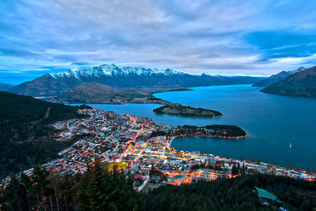
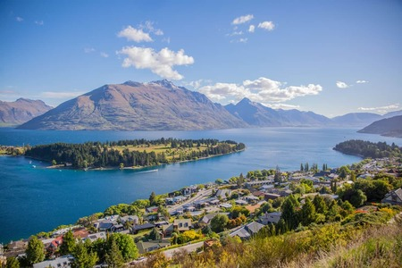
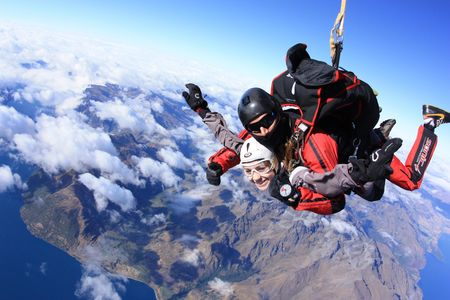
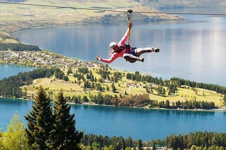
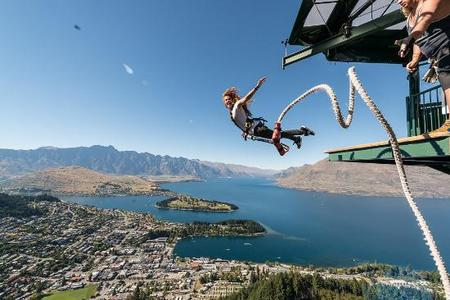
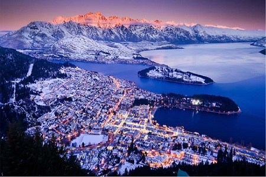
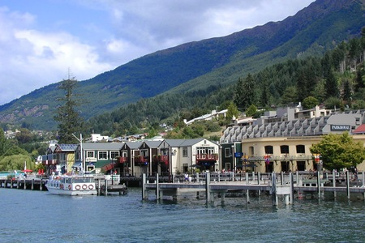

Queenstown
Queenstown es uno de los destinos más emocionantes de Nueva Zelanda.
Rodeada de imponentes montañas y ubicada a orillas de un lago, Queenstown
es un centro de aventura, repleta de adrenalina y con un omnipresente
sentido de la diversión.
Con muchísimas opciones de actividades al aire libre, Queenstown es el
hogar de la lista definitiva de aventuras. Se puede esquiar desde el
invierno hasta la primavera y actividades como saltos bungy, paracaidismo,
hamacas extremas sobre un cañón, lanchas jetboat, excursiones a caballo y
descenso de ríos durante todo el año.
También es un conocido destino para practicar ciclismo, ofreciendo desde senderos pintorescos fáciles a senderos más alejados, senderos por calles y rutas y senderos de ciclismo a los que se
accede en helicóptero, y el único sendero de ciclismo de montaña de descenso al que se accede en teleférico en el hemisferio sur.
Si no te gustan las aventuras difíciles, también hay muchas opciones más tranquilas. Disfrutá de uno de los numerosos senderos para realizar caminatas y excursionismo,
realizá recorridos turísticos guiados o date un gusto con tratamientos de spa, compras en tiendas boutique y excelente gastronomía y vinos.






